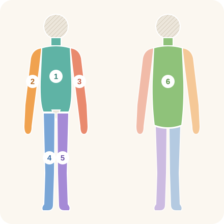

Проверено ChatGPT 04.11.2026, с правками
Для кого эта памятка
Для пациентов, которым предстоит плановая операция в отделении ортопедии и позвоночника, и для их близких. Это общая информация: индивидуальные указания врача, анестезиолога и отделения важнее.
Еда и питьё перед операцией
Перед анестезией и седацией важно соблюдать назначенное голодание: это снижает риск попадания содержимого желудка в дыхательные пути. Указанные интервалы отсчитывают до начала анестезии или процедуры. При сахарном диабете, замедленном опорожнении желудка и других факторах риска анестезиолог может назначить иной режим. Выполняйте индивидуальные указания отделения.
Общие правила для взрослых без повышенного риска (ASA, 2017):
- лёгкая еда (например, тост и чай) — не позже чем за 6 часов;
- жирная, жареная еда, мясо — не позже чем за 8 часов;
- прозрачные жидкости (вода, чай или кофе без молока, прозрачный сок без мякоти) — не позже чем за 2 часа;
- молоко (не грудное) считается едой — не позже чем за 6 часов.
В некоторых случаях перед операцией разрешают прозрачные углеводные напитки. Принимать специальные предоперационные напитки самостоятельно не нужно: следуйте письменным инструкциям анестезиолога и отделения (ASA, 2023).
Лекарства
- Не прекращайте и не меняйте лекарства самостоятельно.
- Принесите полный список лекарств, включая витамины и травяные средства (NICE NG5).
- Заранее получите отдельные указания для каждого постоянного лекарства: принять утром, временно пропустить или изменить дозу. Особенно важно согласовать лекарства от давления, диабета и препараты, влияющие на свёртывание крови. Разрешённые утренние таблетки можно запить небольшим глотком воды (AHA/ACC, 2024).
- Препараты, разжижающие кровь (например, варфарин, апиксабан, ривароксабан, дабигатран, клопидогрел, аспирин): когда остановить и нужна ли замена — решает только врач.
- Если вы принимаете эмпаглифлозин, дапаглифлозин или канаглифлозин, заранее сообщите об этом врачу. Согласно инструкциям FDA, перед плановой операцией их обычно прекращают принимать не менее чем за 3 дня; эртуглифлозин — не менее чем за 4 дня. Возобновление лечения согласуют с врачом после стабилизации состояния и восстановления питания.
- Если вы принимаете семаглутид, тирзепатид или другие препараты для лечения диабета либо снижения веса, сообщите об этом анестезиологу. Подготовка и необходимость временного изменения лечения определяются индивидуально. Не отменяйте лекарства самостоятельно.
Душ и кожа перед операцией
- Вечером накануне плановой операции примите душ с мылом и вымойте голову. Наденьте чистую одежду. По возможности повторите душ утром в день операции (Минздрав Израиля, циркуляр 24/2001).
- Каким средством мыться — в разделе ниже.
- Не брейте место операции: бритьё повышает риск инфекции. Если волосы нужно убрать, это сделают в больнице электрической машинкой в день операции (NICE NG125).
- Снимите украшения, лак и накладные ногти, макияж.
Чем мыться вечером накануне и утром в день операции

- В отделении вам могут выдать антисептическое моющее средство с хлоргексидином 4%, например «Септал скраб» (ספטל סקרב, Teva). Если выдали, мойтесь им дважды: вечером накануне операции и утром в день операции (по инструкции производителя).
- Как: сначала вымойте волосы обычным шампунем, лицо и наружные половые органы — обычным мылом. Тщательно смойте. Затем нанесите на влажную неповреждённую кожу около 25 мл неразбавленного средства и вымойте тело от шеи до ступней, избегая половых органов, слизистых оболочек, ран и раздражённой кожи. Тщательно смойте водой, вытритесь чистым полотенцем и наденьте чистую одежду.
- Не допускайте попадания средства в глаза и уши, не используйте внутри носа, ушей и рта, не глотайте. Если средство попало в глаза, немедленно тщательно промойте их большим количеством воды. При боли, покраснении или нарушении зрения срочно обратитесь за медицинской помощью.
- Если раньше была аллергия на хлоргексидин или другие компоненты средства — не используйте его и сообщите персоналу. Если появились зуд, сыпь или покраснение — прекратите использование, смойте средство и немедленно свяжитесь с отделением или врачом. При отёке губ или горла, затруднённом дыхании — немедленно звоните 101. Если вы уже в больнице, срочно позовите персонал.
- Если такое средство не выдали — обычный душ с мылом.
- Только для наружного применения. Храните в недоступном для детей месте.
Источники: Минздрав Израиля — вкладыш Septal Scrub, 08/2024; MSKCC; NICE NG125.
Салфетки с хлоргексидином 2%: кому и как
- Перед некоторыми операциями, например на позвоночнике, персонал может дополнительно обработать кожу салфетками с хлоргексидином 2% (например, Sage, Stryker). Если перед этим пациент принял душ, кожу необходимо полностью высушить. Если пациент не может принять душ, персонал помогает провести гигиеническое мытьё в кровати и при необходимости отдельно выполняет предоперационную обработку кожи. Решение принимает отделение по своему протоколу.

- В упаковке 6 салфеток. На схеме показан пример больничного порядка обработки шести зон тела. Это не инструкция производителя Sage по обработке операционного поля. Точную схему и необходимое количество салфеток определяет персонал.
- шея, грудь, живот и паховые складки
- правое плечо, рука, подмышка и кисть
- левое плечо, рука, подмышка и кисть
- правая нога и стопа
- левая нога и стопа
- задняя поверхность шеи, спина и ягодицы
- Кожу обрабатывают последовательно по зонам, используя для каждой новую салфетку. Движения — вперёд-назад, с достаточным, но не травмирующим кожу нажимом. Особое внимание уделяют кожным складкам.
- Лицо, глаза, уши, рот, половые органы, слизистые, раны и повреждённую кожу салфетками не протирают.
- После протирания средство не смывают и не вытирают полотенцем: кожа высыхает сама (1–2 минуты), может быть немного липкой — это нормально. Затем — чистая рубашка и чистое бельё на кровати. Не наносите после этого свои кремы, лосьоны и дезодорант, если персонал не разрешил.
- Если у вас была аллергия на хлоргексидин или другие компоненты средства, не используйте салфетки и заранее сообщите персоналу. При жжении, зуде, сыпи или покраснении прекратите обработку и немедленно сообщите персоналу. При попадании средства в глаза сразу промойте их прохладной водой и обратитесь за медицинской помощью. При попадании в уши или рот немедленно сообщите персоналу для безопасного промывания. При отёке лица или горла, затруднённом дыхании немедленно зовите персонал; вне больницы — звоните 101.
- Использованные салфетки — в мусор, не в унитаз.
Источники: DailyMed (FDA) — Sage 2% CHG Cloth; MSKCC; UCSF; University of Iowa.
Что взять с собой
- Возьмите удостоверение личности с фотографией и документы, перечисленные в приглашении на операцию. Если операция оформляется по обязательству больничной кассы, заранее проверьте наличие действующей формы 17 (טופס 17) с правильным кодом медицинской услуги. Необходимость этого документа уточните в регистратуре.
- Список лекарств, медицинские документы и результаты обследований.
- Очки, слуховой аппарат, зубные протезы — с футлярами, подписанными вашим именем; аппарат CPAP, если пользуетесь.
- Удобную одежду и закрытую обувь без скольжения; ходунки или костыли — если вам так сказали.
- Ценные вещи и крупные суммы денег лучше оставить дома.
Идентификационный браслет
При поступлении вам наденут идентификационный браслет. Перед медицинскими процедурами персонал будет проверять не менее двух идентификаторов — например, полное имя и дату рождения или идентификационный номер — в соответствии с правилами больницы (Минздрав Израиля, циркуляр 33/2006; ВОЗ, 2007). Если данные неверны или браслет потерян, немедленно сообщите медсестре.
Курение и алкоголь
Если вы курите или употребляете алкоголь, обсудите с врачом, как уменьшить или прекратить до операции (NICE NG180).
Когда сообщить в отделение до операции
Позвоните в отделение, если перед операцией у вас появилась температура, кашель, рана или сыпь на коже в зоне операции, или вы заболели. Возможно, операцию нужно будет перенести. При угрозе жизни звоните 101 (Маген Давид Адом).
Видео: Подготовка к операции
Главы видео
Официальные источники
- ASA, Practice Guidelines for Preoperative Fasting, Anesthesiology 2017
- ASA, Practice Guidelines for Preoperative Fasting: Carbohydrate-containing Clear Liquids, Anesthesiology 2023
- AHA/ACC, Guideline for Perioperative Cardiovascular Management for Noncardiac Surgery, 2024
- FDA, Jardiance (empagliflozin) label 2025
- FDA/DailyMed, Farxiga (dapagliflozin)
- FDA/DailyMed, Invokana (canagliflozin)
- FDA/DailyMed, Steglatro (ertugliflozin)
- Multisociety guidance on GLP-1 receptor agonists before surgery, Anesthesiology 2024
- NICE NG5, Medicines optimisation (сверка лекарств)
- NICE NG180, Perioperative care in adults
- Минздрав Израиля, חוזר 24/2001, раздел 4
- NICE NG125, Surgical site infections: prevention and treatment
- Медицинский центр Вольфсон, инструкция перед операцией (טופס 17)
- Минздрав Израиля, חוזר 33/2006 (идентификация пациентов)
- WHO, Patient Safety Solutions: Patient Identification, 2007
- Маген Давид Адом — 101
נבדק 04.11.2026, עם תיקונים
למי מיועד הדף
למטופלים לפני ניתוח מתוכנן במחלקה האורתופדית ועמוד השדרה ולבני משפחתם. זהו מידע כללי: ההוראות האישיות של הרופא, המרדים והמחלקה קודמות לו.
אוכל ושתייה לפני הניתוח
לפני הרדמה וסדציה חשוב לשמור על הצום שנקבע: הוא מקטין את הסיכון שתוכן הקיבה יגיע לדרכי הנשימה. מחשבים את פרקי הזמן עד תחילת ההרדמה או הפעולה. בסוכרת, בהתרוקנות קיבה איטית ובגורמי סיכון אחרים המרדים עשוי לקבוע הוראות אחרות. פעלו לפי ההוראות האישיות של המחלקה.
כללים כלליים למבוגרים ללא סיכון מוגבר (ASA, 2017):
- ארוחה קלה (למשל טוסט ותה) — עד 6 שעות לפני;
- אוכל שומני, מטוגן, בשר — עד 8 שעות לפני;
- נוזלים צלולים (מים, תה או קפה בלי חלב, מיץ צלול ללא ציפה) — עד שעתיים לפני;
- חלב (לא חלב אם) נחשב כמזון — עד 6 שעות לפני.
במקרים מסוימים מותר לשתות לפני הניתוח משקאות פחמימות צלולים. אין צורך לשתות משקאות מיוחדים לפני ניתוח על דעת עצמכם: פעלו לפי ההוראות הכתובות של המרדים והמחלקה (ASA, 2023).
תרופות
- אל תפסיקו ואל תשנו תרופות על דעת עצמכם.
- הביאו רשימה מלאה של התרופות, כולל ויטמינים ותכשירי צמחים (NICE NG5).
- קבלו מראש הוראה נפרדת לכל תרופה קבועה: לקחת בבוקר, לדלג זמנית או לשנות מינון. חשוב במיוחד לתאם תרופות ללחץ דם, לסוכרת ותרופות המשפיעות על קרישת הדם. את כדורי הבוקר שאושרו אפשר לבלוע עם לגימת מים קטנה (AHA/ACC, 2024).
- תרופות לדילול הדם (למשל וורפרין, אפיקסבן, ריברוקסבן, דביגטרן, קלופידוגרל, אספירין): מתי להפסיק והאם צריך תחליף — מחליט רק הרופא.
- אם אתם נוטלים אמפגליפלוזין, דפגליפלוזין או קנגליפלוזין, ספרו על כך לרופא מראש. לפי עלוני FDA, לפני ניתוח מתוכנן מפסיקים אותם בדרך כלל לפחות 3 ימים לפני; ארטוגליפלוזין — לפחות 4 ימים לפני. את חידוש הטיפול מתאמים עם הרופא אחרי התייצבות המצב וחזרה לאכילה.
- אם אתם נוטלים סמגלוטייד, טירזפטייד או תרופות אחרות לסוכרת או להורדה במשקל, ספרו על כך למרדים. ההכנה והצורך בשינוי זמני בטיפול נקבעים באופן אישי. אל תפסיקו תרופות על דעת עצמכם.
מקלחת והכנת העור
- בערב שלפני הניתוח המתוכנן התקלחו עם סבון וחפפו את הראש. לבשו בגדים נקיים. אם אפשר, חזרו על המקלחת בבוקר הניתוח (משרד הבריאות, חוזר 24/2001).
- במה להתקלח — בחלק הבא.
- אל תגלחו את אזור הניתוח: גילוח מעלה את הסיכון לזיהום. אם צריך להסיר שיער, יעשו זאת בבית החולים במכונה חשמלית ביום הניתוח (NICE NG125).
- הסירו תכשיטים, לק, ציפורניים מלאכותיות ואיפור.
במה להתקלח בערב שלפני הניתוח ובבוקר הניתוח
- ייתכן שהמחלקה תיתן לכם תכשיר רחצה אנטיספטי עם כלורהקסידין 4%, למשל „ספטל סקרב" (Teva). אם קיבלתם אותו, התקלחו איתו פעמיים: בערב שלפני הניתוח ובבוקר יום הניתוח (לפי עלון היצרן).
- איך: תחילה חפפו את השיער בשמפו רגיל ורחצו את הפנים ואת איברי המין החיצוניים בסבון רגיל. שטפו היטב. לאחר מכן מרחו כ־25 מ״ל מהתכשיר ללא דילול על עור רטוב ושלם, ורחצו את הגוף מהצוואר ועד כפות הרגליים, תוך הימנעות מאיברי המין החיצוניים, מריריות, מפצעים ומעור מגורה. שטפו היטב במים, התנגבו במגבת נקייה ולבשו בגדים נקיים.
- הימנעו ממגע של התכשיר עם העיניים והאוזניים. אין להשתמש בו בתוך האף, האוזניים או הפה ואין לבלוע אותו. אם התכשיר נכנס לעיניים, שטפו אותן מיד וביסודיות בכמות גדולה של מים. אם מופיעים כאב, אודם או הפרעה בראייה, פנו בדחיפות לקבלת טיפול רפואי.
- אם הייתה לכם בעבר אלרגיה לכלורהקסידין או לאחד ממרכיבי התכשיר, אל תשתמשו בו ודווחו לצוות. אם הופיעו גרד, פריחה או אדמומיות, הפסיקו את השימוש, שטפו את התכשיר ופנו מיד למחלקה או לרופא. במקרה של נפיחות בשפתיים או בגרון או קושי בנשימה, התקשרו מיד ל־101. אם אתם בבית החולים, הזעיקו מיד את הצוות.
- אם לא קיבלתם תכשיר כזה, התקלחו כרגיל עם סבון.
- לשימוש חיצוני בלבד. יש לשמור הרחק מהישג ידם של ילדים.
מקורות: משרד הבריאות — עלון ספטל סקרב, 08/2024; MSKCC; NICE NG125.
מגבונים עם כלורהקסידין 2%: למי ואיך
- לפני ניתוחים מסוימים, למשל ניתוחי עמוד שדרה, הצוות עשוי לבצע הכנה נוספת של העור באמצעות מגבונים המכילים כלורהקסידין 2% (למשל Sage של Stryker). אם המטופל התקלח קודם לכן, יש לייבש את העור לחלוטין. אם המטופל אינו יכול להתקלח, הצוות מסייע לו ברחצה במיטה, ובמידת הצורך מבצע בנפרד הכנה אנטיספטית של העור לפני הניתוח. ההחלטה מתקבלת במחלקה בהתאם לנוהל שלה.
- באריזה יש 6 מגבונים. בתרשים מוצגת דוגמה לסדר טיפול בשישה אזורי גוף לפי נוהל בית חולים. זו אינה הוראת היצרן של Sage להכנת שדה הניתוח. הצוות קובע את אופן השימוש ואת מספר המגבונים הנדרש.
- צוואר, חזה, בטן וקפלי המפשעה
- כתף, זרוע, בית שחי וכף יד ימין
- כתף, זרוע, בית שחי וכף יד שמאל
- רגל וכף רגל ימין
- רגל וכף רגל שמאל
- העורף, הגב והישבן
- מנגבים את העור לפי אזורים, תוך שימוש במגבון חדש לכל אזור. מנגבים בתנועות הלוך ושוב, בלחץ מספק אך ללא שפשוף הפוגע בעור. מקפידים במיוחד על קפלי העור.
- לא מנגבים במגבונים את הפנים, העיניים, האוזניים, הפה, איברי המין, ריריות, פצעים ועור פגוע.
- אחרי הניגוב לא שוטפים ולא מנגבים במגבת: העור מתייבש לבד (דקה–שתיים) ועלול להיות מעט דביק, זה תקין. לאחר מכן לובשים חלוק נקי ומחליפים מצעים. אל תמרחו אחר כך קרמים, תחליבים או דאודורנט משלכם, אלא אם הצוות התיר.
- אם הייתה לכם בעבר אלרגיה לכלורהקסידין או למרכיבים אחרים של התכשיר, אין להשתמש במגבונים ויש לדווח לצוות מראש. אם מופיעים צריבה, גרד, פריחה או אדמומיות, הפסיקו את השימוש ודווחו מיד לצוות. אם התכשיר נכנס לעיניים, שטפו אותן מיד במים קרירים ופנו לקבלת טיפול רפואי. אם התכשיר הגיע לאוזניים או לפה, הודיעו מיד לצוות כדי לקבל סיוע בשטיפה בטוחה. במקרה של נפיחות בפנים או בגרון או קושי בנשימה, הזעיקו מיד את הצוות; מחוץ לבית החולים התקשרו ל־101.
- את המגבונים המשומשים זורקים לפח, לא לאסלה.
מקורות: DailyMed (FDA) — Sage 2% CHG Cloth; MSKCC; UCSF; University of Iowa.
מה להביא
- הביאו תעודה מזהה עם תמונה ואת המסמכים המפורטים בהזמנה לניתוח. אם הניתוח מתבצע בהתחייבות של קופת החולים, בדקו מראש שיש לכם טופס 17 בתוקף עם קוד השירות הרפואי הנכון. ביררו בקבלה אם המסמך נדרש.
- רשימת תרופות, מסמכים רפואיים ותוצאות בדיקות.
- משקפיים, מכשיר שמיעה, תותבות שיניים — בנרתיקים עם שמכם; מכשיר CPAP אם אתם משתמשים.
- בגדים נוחים ונעליים סגורות שאינן מחליקות; הליכון או קביים — אם נאמר לכם.
- עדיף להשאיר בבית חפצי ערך וסכומי כסף גדולים.
צמיד זיהוי
בקבלה יענידו לכם צמיד זיהוי. לפני פעולות רפואיות הצוות יבדוק לפחות שני פרטים מזהים — למשל שם מלא ותאריך לידה או מספר זהות — לפי נוהלי בית החולים (משרד הבריאות, חוזר 33/2006; ארגון הבריאות העולמי, 2007). אם הפרטים שגויים או שהצמיד אבד, הודיעו מיד לאחות.
עישון ואלכוהול
אם אתם מעשנים או שותים אלכוהול, שוחחו עם הרופא איך להפחית או להפסיק לפני הניתוח (NICE NG180).
מתי להודיע למחלקה לפני הניתוח
התקשרו למחלקה אם לפני הניתוח הופיעו חום, שיעול, פצע או פריחה בעור באזור הניתוח, או שחליתם. ייתכן שיהיה צורך לדחות את הניתוח. במצב מסכן חיים התקשרו ל־101 (מגן דוד אדום).
סרטון: הכנה לניתוח
מקורות רשמיים
- ASA, Practice Guidelines for Preoperative Fasting, Anesthesiology 2017
- ASA, Practice Guidelines for Preoperative Fasting: Carbohydrate-containing Clear Liquids, Anesthesiology 2023
- AHA/ACC, Guideline for Perioperative Cardiovascular Management for Noncardiac Surgery, 2024
- FDA, Jardiance (empagliflozin) label 2025
- FDA/DailyMed, Farxiga (dapagliflozin)
- FDA/DailyMed, Invokana (canagliflozin)
- FDA/DailyMed, Steglatro (ertugliflozin)
- Multisociety guidance on GLP-1 receptor agonists before surgery, Anesthesiology 2024
- NICE NG5, Medicines optimisation (сверка лекарств)
- NICE NG180, Perioperative care in adults
- Минздрав Израиля, חוזר 24/2001, раздел 4
- NICE NG125, Surgical site infections: prevention and treatment
- Медицинский центр Вольфсон, инструкция перед операцией (טופס 17)
- Минздрав Израиля, חוזר 33/2006 (идентификация пациентов)
- WHO, Patient Safety Solutions: Patient Identification, 2007
- Маген Давид Адом — 101
تمت المراجعة 04.11.2026، مع تعديلات
لمن هذه النشرة
للمرضى المقبلين على عملية مخطط لها في قسم جراحة العظام والعمود الفقري ولعائلاتهم. هذه معلومات عامة: التعليمات الشخصية من الطبيب وطبيب التخدير والقسم لها الأولوية.
الطعام والشراب قبل العملية
قبل التخدير والتهدئة من المهم الالتزام بالصيام المحدد: فهو يقلل خطر وصول محتوى المعدة إلى المجاري التنفسية. تُحسب الفترات حتى بدء التخدير أو الإجراء. في حالات السكري وبطء إفراغ المعدة وعوامل الخطر الأخرى قد يحدد طبيب التخدير نظامًا مختلفًا. اتبعوا التعليمات الشخصية للقسم.
القواعد العامة للبالغين من دون خطر مرتفع (ASA، 2017):
- وجبة خفيفة (مثل خبز محمص وشاي) — حتى 6 ساعات قبل؛
- طعام دهني أو مقلي أو لحوم — حتى 8 ساعات قبل؛
- السوائل الصافية (ماء، شاي أو قهوة من دون حليب، عصير صافٍ من دون لب) — حتى ساعتين قبل؛
- الحليب (غير حليب الأم) يُعدّ طعامًا — حتى 6 ساعات قبل.
في بعض الحالات يُسمح قبل العملية بمشروبات كربوهيدراتية صافية. لا داعي لتناول مشروبات خاصة قبل العملية من تلقاء أنفسكم: اتبعوا التعليمات المكتوبة من طبيب التخدير والقسم (ASA، 2023).
الأدوية
- لا توقفوا أي دواء ولا تغيّروه من تلقاء أنفسكم.
- أحضروا قائمة كاملة بالأدوية، بما فيها الفيتامينات والمستحضرات العشبية (NICE NG5).
- احصلوا مسبقًا على تعليمات منفصلة لكل دواء دائم: تناوله صباحًا، أو تخطيه مؤقتًا، أو تغيير جرعته. من المهم بشكل خاص تنسيق أدوية الضغط والسكري والأدوية المؤثرة على تخثر الدم. يمكن بلع حبوب الصباح المسموح بها مع رشفة ماء صغيرة (AHA/ACC، 2024).
- أدوية تمييع الدم (مثل الوارفارين، أبيكسابان، ريفاروكسابان، دابيغاتران، كلوبيدوغريل، الأسبرين): متى تُوقف وهل يلزم بديل — يقرر ذلك الطبيب فقط.
- إذا كنتم تتناولون إمباغليفلوزين أو داباغليفلوزين أو كاناغليفلوزين، أبلغوا الطبيب مسبقًا. وفق نشرات FDA تُوقف عادةً قبل العملية المخطط لها بـ 3 أيام على الأقل؛ وإرتوغليفلوزين — بـ 4 أيام على الأقل. يُنسَّق استئناف العلاج مع الطبيب بعد استقرار الحالة والعودة إلى الأكل.
- إذا كنتم تتناولون سيماغلوتيد أو تيرزيباتيد أو أدوية أخرى للسكري أو لإنقاص الوزن، أبلغوا طبيب التخدير. التحضير والحاجة إلى تغيير مؤقت في العلاج يُحددان بشكل فردي. لا توقفوا الأدوية من تلقاء أنفسكم.
الاستحمام وتحضير الجلد
- في مساء اليوم السابق للعملية المخطط لها استحموا بالصابون واغسلوا الرأس. البسوا ملابس نظيفة. إن أمكن، كرروا الاستحمام صباح يوم العملية (وزارة الصحة، تعميم 24/2001).
- بماذا تستحمون — في القسم التالي.
- لا تحلقوا منطقة العملية: الحلاقة تزيد خطر العدوى. إذا لزم إزالة الشعر، تتم في المستشفى بآلة كهربائية يوم العملية (NICE NG125).
- انزعوا المجوهرات وطلاء الأظافر والأظافر الاصطناعية والمكياج.
بماذا تستحمون مساء اليوم السابق للعملية وصباح يومها
- قد يعطيكم القسم مستحضر غسل مطهّرًا يحتوي على الكلورهيكسيدين 4%، مثل «سبتال سكراب» (Teva). إذا حصلتم عليه، استحموا به مرتين: مساء اليوم السابق للعملية وصباح يوم العملية (حسب نشرة المُصنِّع).
- الطريقة: اغسلوا الشعر أولًا بالشامبو العادي، والوجه والأعضاء التناسلية الخارجية بالصابون العادي، ثم اشطفوا جيدًا. بعد ذلك ضعوا نحو 25 مل من المستحضر غير المخفّف على جلد مبلّل وسليم، واغسلوا الجسم من الرقبة حتى القدمين، مع تجنّب الأعضاء التناسلية الخارجية والأغشية المخاطية والجروح والجلد المتهيّج. اشطفوا جيدًا بالماء، وجفّفوا الجسم بمنشفة نظيفة، وارتدوا ملابس نظيفة.
- تجنّبوا ملامسة المستحضر للعينين والأذنين. لا تستعملوه داخل الأنف أو الأذنين أو الفم ولا تبتلعوه. إذا دخل المستحضر في العينين، فاشطفوهما فورًا وبعناية بكمية كبيرة من الماء. إذا ظهر ألم أو احمرار أو اضطراب في الرؤية، فاطلبوا المساعدة الطبية على وجه السرعة.
- إذا كانت لديكم حساسية سابقة من الكلورهيكسيدين أو من أحد مكوّنات المستحضر، فلا تستعملوه وأبلغوا الطاقم. إذا ظهرت حكة أو طفح أو احمرار، فأوقفوا استعماله واشطفوه واتصلوا فورًا بالقسم أو بالطبيب. عند تورّم الشفتين أو الحلق أو صعوبة التنفّس، اتصلوا فورًا بـ101. وإذا كنتم داخل المستشفى، فاطلبوا مساعدة الطاقم فورًا.
- إذا لم تحصلوا على هذا المستحضر، استحموا كالمعتاد بالصابون.
- للاستعمال الخارجي فقط. يُحفظ بعيدًا عن متناول الأطفال.
المصادر: وزارة الصحة — نشرة سبتال سكراب، 08/2024; MSKCC; NICE NG125.
مناديل الكلورهيكسيدين 2%: لمن وكيف
- قبل بعض العمليات، مثل عمليات العمود الفقري، قد يُجري الطاقم تحضيرًا إضافيًا للجلد باستخدام مناديل تحتوي على الكلورهيكسيدين 2% (مثل Sage من Stryker). إذا استحمّ المريض قبل ذلك، يجب تجفيف الجلد تمامًا. وإذا لم يستطع الاستحمام، يساعده الطاقم على الاغتسال في السرير، ويُجري عند الحاجة تحضيرًا مطهّرًا منفصلًا للجلد قبل العملية. يتخذ القسم القرار وفقًا لبروتوكوله.
- تحتوي العبوة على 6 مناديل. يوضّح الرسم مثالًا لتوزيع المناديل على ست مناطق من الجسم وفق بروتوكول أحد المستشفيات. هذه ليست تعليمات الشركة المصنّعة Sage لتحضير موضع الجراحة. يحدّد الطاقم طريقة الاستعمال وعدد المناديل اللازم.
- الرقبة والصدر والبطن وثنايا الأُربية
- الكتف والذراع والإبط واليد اليمنى
- الكتف والذراع والإبط واليد اليسرى
- الساق والقدم اليمنى
- الساق والقدم اليسرى
- مؤخرة الرقبة والظهر والأرداف
- يُمسح الجلد بالتتابع حسب المناطق، باستخدام منديل جديد لكل منطقة. تُستخدم حركات ذهاب وإياب مع ضغط كافٍ دون فرك يؤذي الجلد، مع الاهتمام بشكل خاص بثنايا الجلد.
- لا تُمسح بالمناديل: الوجه والعينان والأذنان والفم والأعضاء التناسلية والأغشية المخاطية والجروح والجلد المتضرّر.
- بعد المسح لا يُشطف الجلد ولا يُجفَّف بالمنشفة: يجفّ وحده (دقيقة إلى دقيقتين) وقد يكون لزجًا قليلًا، وهذا طبيعي. بعد ذلك يُلبس رداء نظيف وتُغيَّر أغطية السرير. لا تضعوا بعدها كريمات أو مستحضرات ترطيب أو مزيل عرق خاصًا بكم إلا بإذن الطاقم.
- إذا كانت لديكم حساسية سابقة من الكلورهيكسيدين أو من أي مكوّن آخر للمستحضر، فلا تستخدموا المناديل وأبلغوا الطاقم مسبقًا. إذا ظهر حرقان أو حكة أو طفح أو احمرار، فأوقفوا الاستعمال وأبلغوا الطاقم فورًا. إذا دخل المستحضر في العينين، فاشطفوهما فورًا بالماء البارد واطلبوا المساعدة الطبية. وإذا وصل إلى الأذنين أو الفم، فأبلغوا الطاقم فورًا للحصول على المساعدة في الغسل بطريقة آمنة. عند تورّم الوجه أو الحلق أو صعوبة التنفس، اطلبوا مساعدة الطاقم فورًا؛ وخارج المستشفى اتصلوا بـ101.
- تُرمى المناديل المستعملة في سلة النفايات، لا في المرحاض.
المصادر: DailyMed (FDA) — Sage 2% CHG Cloth; MSKCC; UCSF; University of Iowa.
ماذا تحضرون معكم
- أحضروا بطاقة هوية مع صورة والوثائق المذكورة في دعوة العملية. إذا كانت العملية بتعهّد من صندوق المرضى، تأكدوا مسبقًا من وجود نموذج 17 (טופס 17) ساري المفعول برمز الخدمة الطبية الصحيح. استوضحوا في مكتب الاستقبال إن كان هذا المستند مطلوبًا.
- قائمة الأدوية والوثائق الطبية ونتائج الفحوص.
- النظارات، سماعة الأذن، أطقم الأسنان — في علب عليها اسمكم؛ جهاز CPAP إن كنتم تستعملونه.
- ملابس مريحة وحذاء مغلق غير زلق؛ مشّاية أو عكازات — إذا طُلب منكم ذلك.
- يُفضَّل ترك الأشياء الثمينة والمبالغ الكبيرة في البيت.
سوار التعريف
عند الدخول سيضعون لكم سوار تعريف. قبل الإجراءات الطبية سيتحقق الطاقم من مُعرّفين اثنين على الأقل — مثل الاسم الكامل وتاريخ الميلاد أو رقم الهوية — وفق أنظمة المستشفى (وزارة الصحة، تعميم 33/2006؛ منظمة الصحة العالمية، 2007). إذا كانت البيانات خاطئة أو فُقد السوار، أبلغوا الممرضة فورًا.
التدخين والكحول
إذا كنتم تدخنون أو تشربون الكحول، ناقشوا مع الطبيب كيفية التقليل أو التوقف قبل العملية (NICE NG180).
متى تبلغون القسم قبل العملية
اتصلوا بالقسم إذا ظهرت قبل العملية حرارة أو سعال أو جرح أو طفح جلدي في منطقة العملية، أو إذا مرضتم. قد يلزم تأجيل العملية. في حالة خطر على الحياة اتصلوا بـ 101 (نجمة داوود الحمراء).
فيديو: التحضير للعملية
مصادر رسمية
- ASA, Practice Guidelines for Preoperative Fasting, Anesthesiology 2017
- ASA, Practice Guidelines for Preoperative Fasting: Carbohydrate-containing Clear Liquids, Anesthesiology 2023
- AHA/ACC, Guideline for Perioperative Cardiovascular Management for Noncardiac Surgery, 2024
- FDA, Jardiance (empagliflozin) label 2025
- FDA/DailyMed, Farxiga (dapagliflozin)
- FDA/DailyMed, Invokana (canagliflozin)
- FDA/DailyMed, Steglatro (ertugliflozin)
- Multisociety guidance on GLP-1 receptor agonists before surgery, Anesthesiology 2024
- NICE NG5, Medicines optimisation (сверка лекарств)
- NICE NG180, Perioperative care in adults
- Минздрав Израиля, חוזר 24/2001, раздел 4
- NICE NG125, Surgical site infections: prevention and treatment
- Медицинский центр Вольфсон, инструкция перед операцией (טופס 17)
- Минздрав Израиля, חוזר 33/2006 (идентификация пациентов)
- WHO, Patient Safety Solutions: Patient Identification, 2007
- Маген Давид Адом — 101